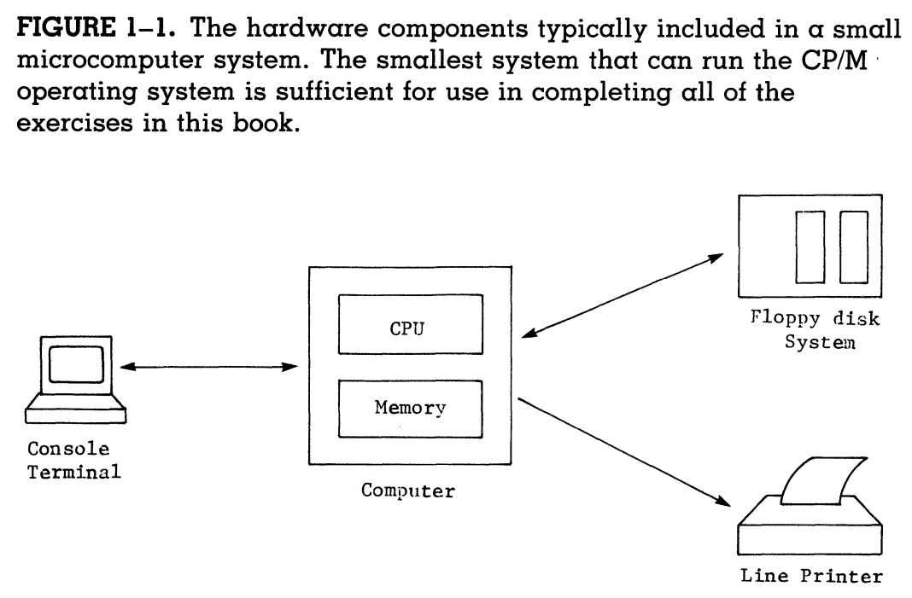

Overview
This week we will dive into CP/M Assembly Language Programming: A Guide to the Integrated Learning of the CP/M Operating System & Assembly Language Programming.
Friday and Monday, September 26th and 29th
Classwork / Homework
We'll begin class with our promised quiz on Chapter 2: Software Components Of the Computer System.
After the quiz we will spend a few minutes talking about what our text calls the minimum size microcomputer for use with the book:

Our systems have four floppy disks. We don't have a physical printer, but I if we need one we can use a printer attached to the host environment.
The next chapter, Chapter 3: The CP/M-Based Computer introduces us to the logical to physical device mapping that CP/M provides in order to abstract away hardware details. It's a very short chapter, so we'll combine it with the following chapter, also very short, Chapter 4: What the Operating System Provides.
We'll read these two chapters and prepare for another keep us honest
quiz next class. Same rules apply - prepare one 8 1/2 by 11 inch sheet of paper
front and back with notest to use on the quiz.
Wednesday and Thursday, September 24th and 25th
Classwork
Today in class we will begin our study of assembly language programming using CP/M Assembly Language Programming as our guide.
During the first half of class, all of you should carefully read:
- Preface
- Introduction
- Chapter 1: Hardware Components of the Computer System
and we should divide the responsibility for presenting good summaries of of this material among the class during the second half.
Chapter 1 is much more involved than the other two sections, so I suggest you break it up among several presenters.
Homework
Read Chapter 2: Software Components Of the Computer System, taking good
notes in your git repo for this class. Read for comprehension! We'll have a
short, keep us honest
quiz on this chapter at the beginning of the next
class. Please print out one 8 1/2 by 11 sheet of
paper with notes before you come to class that you can use during the
quiz.